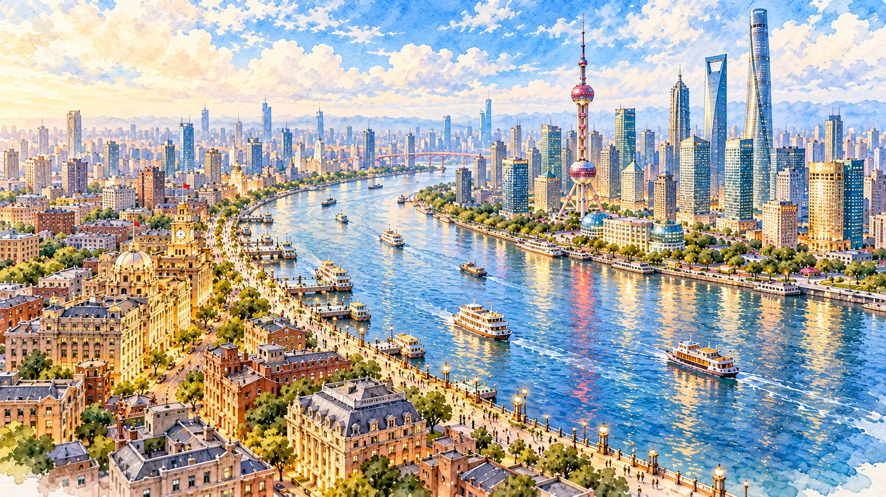
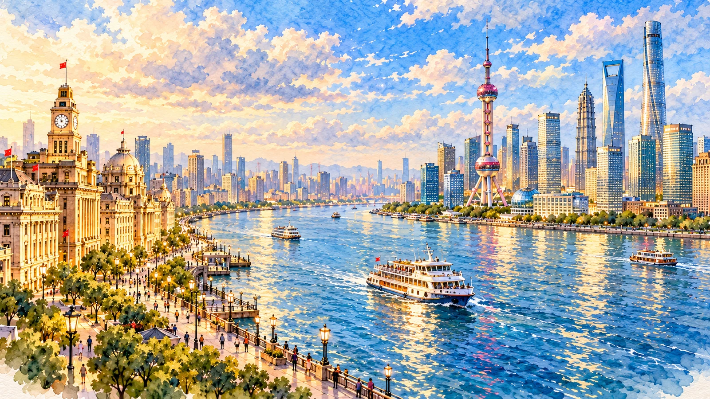
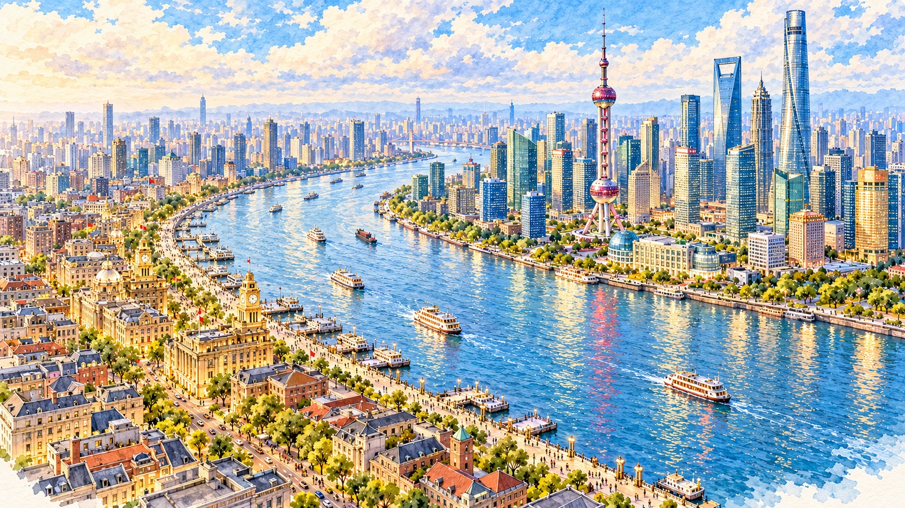
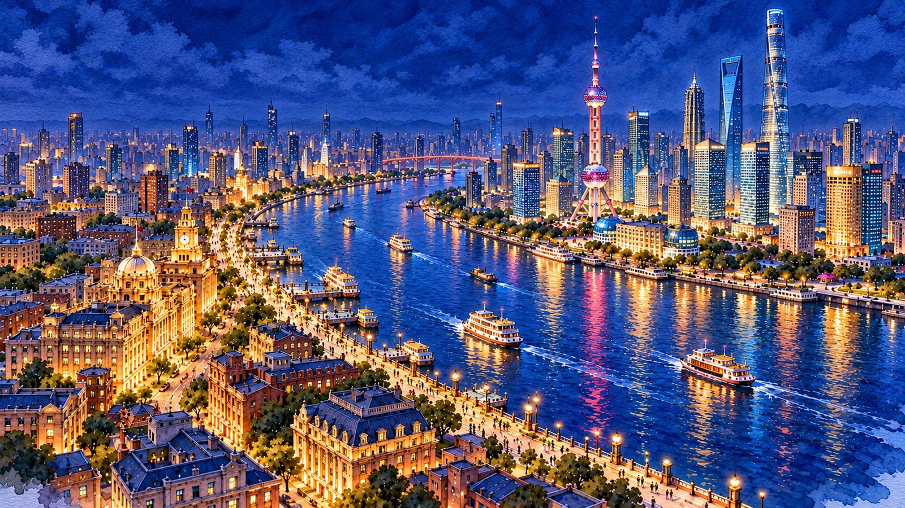
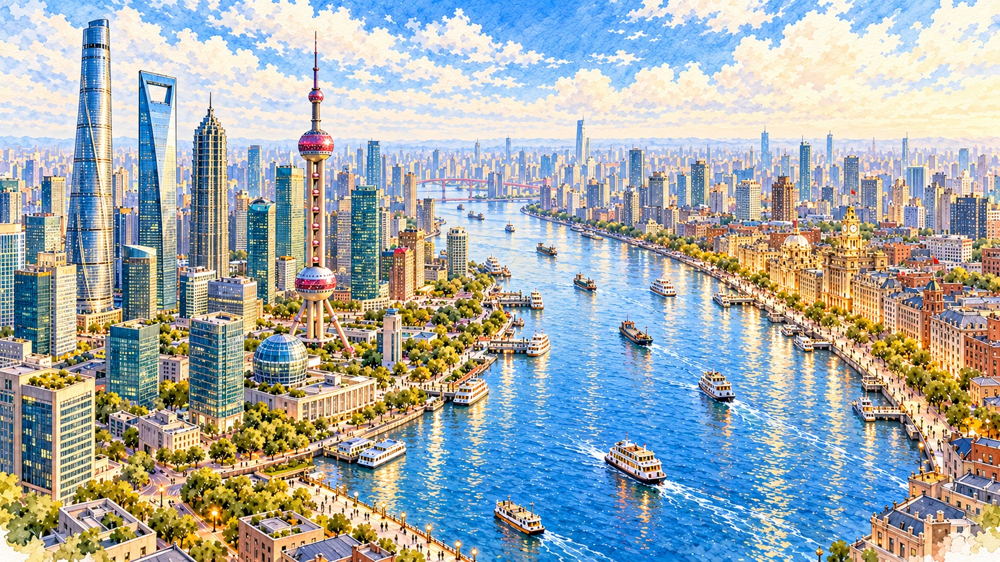
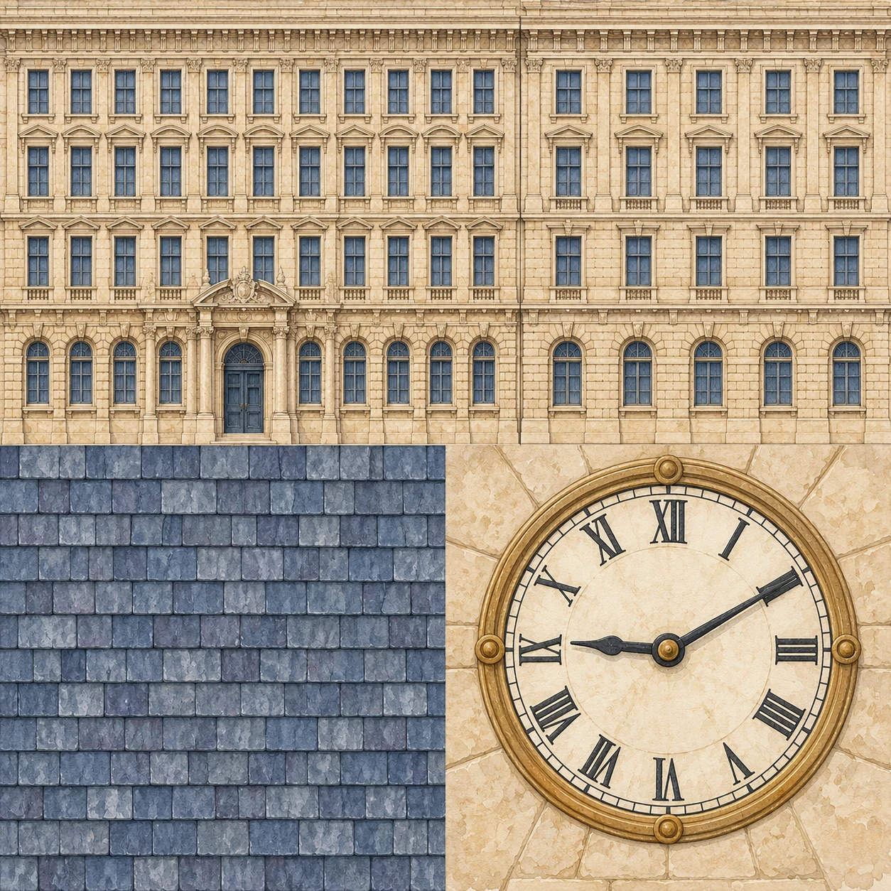
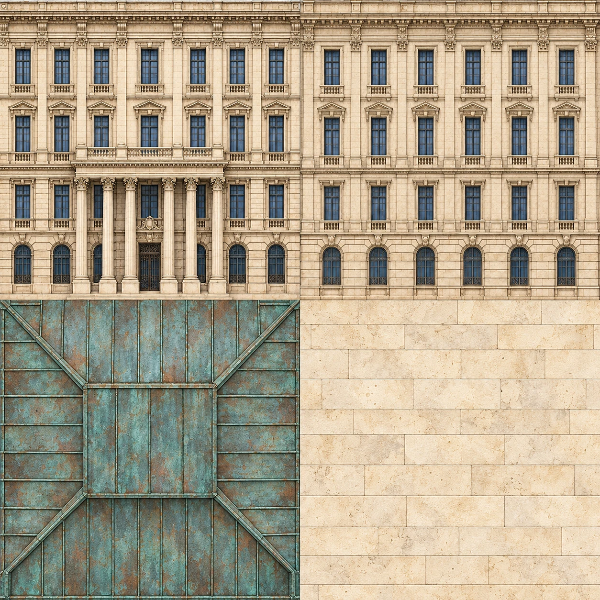
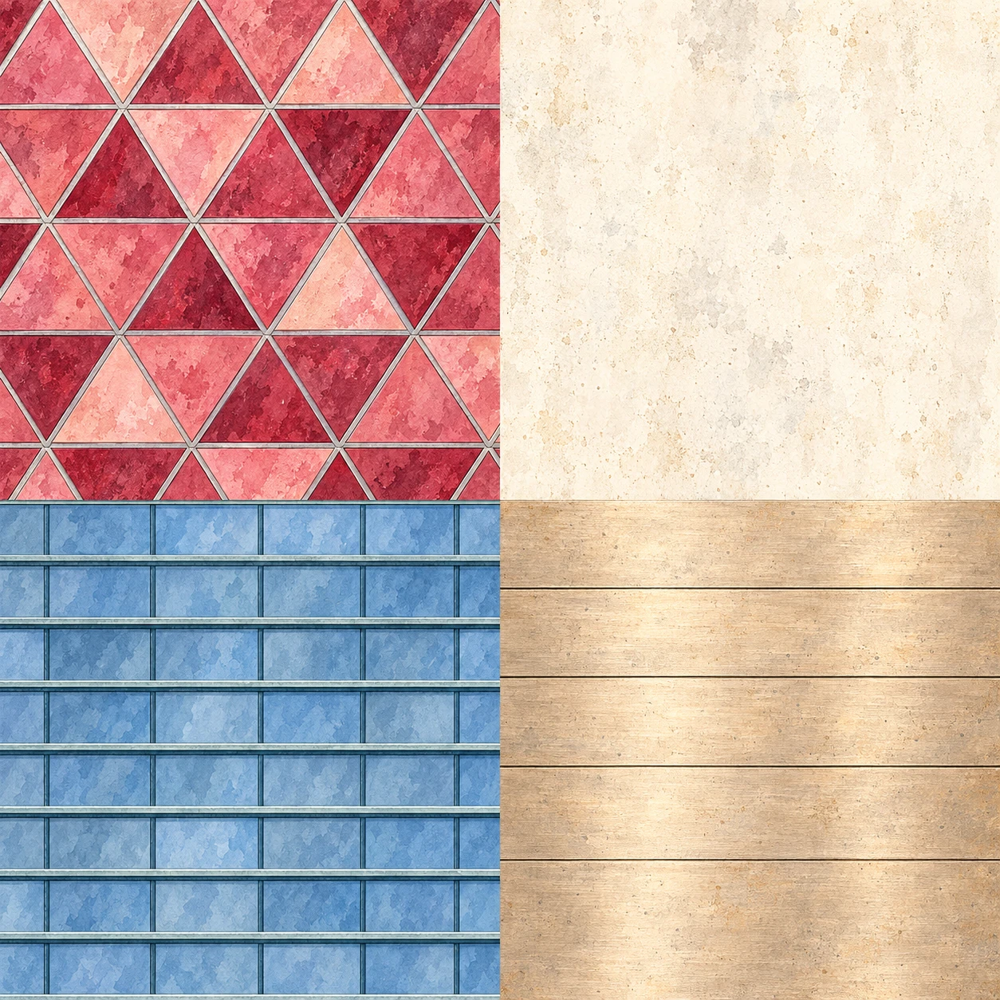
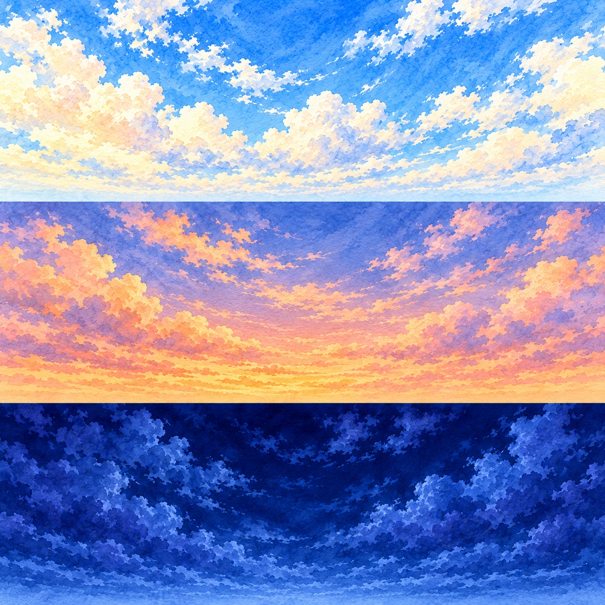

展开用户提供的图2参考
仅用于美术方向参考，未接入运行场景。
A · 接近图2
candidate · 方向已选定
A 已由用户选择为美术方向。构图最接近图2；远景桥梁仅属概念表达，三维布局仍须遵守河口与桥梁约束。
原图 1672 × 941 · 查看原图 · 生成提示词
B · 低视角临江
candidate · 待审阅
更低视角、更强的江岸临场感；没有被选为最终方向。
原图 1672 × 941 · 查看原图 · 生成提示词
C · 街区层次
candidate · 待审阅
街区层次更丰富，但出现重复钟楼，不能直接作为建筑布局依据；没有被选为最终方向。
原图 1672 × 941 · 查看原图 · 生成提示词
A · 暮色色稿
candidate · 待审阅以A编辑，仅调整暮色光照。建筑布局用于保持风格关系，仍须用三维样片验证。
原图 1672 × 941 · 查看原图 · 生成提示词
A · 入夜色稿
candidate · 待审阅
以A编辑，入夜蓝色大气、暖色外滩与有限彩色倒影；不是运行截图。
原图 1672 × 941 · 查看原图 · 生成提示词
A · 反向视角色稿
candidate · 待审阅
新相机从北向南，浦东在左、外滩在右。构图可作侧背面制作参考，但具体建筑位置不能从生成图直接当作地理真值。
原图 1672 × 941 · 查看原图 · 生成提示词
海关大楼 · 立面与屋顶图集
integrated · 待审阅
四象限图集；钟面数字有瑕疵，该象限不用于模型，钟面使用立体刻度。原图实际1254级，未放大冒充2048。
原图 1254 × 1254 · 查看原图 · 生成提示词
原汇丰银行大楼 · 立面与铜绿屋顶
integrated · 待审阅
正面、侧背面、屋顶、石材分别对应模型；非场景背景。
原图 1254 × 1254 · 查看原图 · 生成提示词
东方明珠 · 玫瑰红与玻璃材质
integrated · 待审阅
玫瑰红、混凝土、玻璃、金属四种材质；UV区域分配到球体、支撑和环带。
原图 1254 × 1254 · 查看原图 · 生成提示词
三时段 · 水彩天空图集
integrated · 待审阅
三个水平色带分别裁切为三时段天空，只做裁切与压缩，未放大。天空专用图，不含建筑。
原图 1254 × 1254 · 查看原图 · 生成提示词